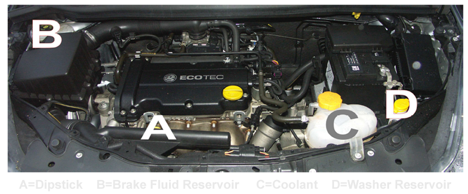

Q1. Open the bonnet, identify where you would check the engine coolant level and tell me how you would check the engine has the correct level.
Answer: Identify the coolant tank and check the min/max markings. If the coolant is below the min mark more coolant should be added. To do this, unscrew the cap and pour in coolant until the max mark is reached.
Q2. Open the bonnet, identify where the brake fluid reservoir is and tell me how you would check that you have a safe level of hydraulic brake fluid.
Answer Identify the brake fluid reservoir and check the fluid level against the min/max levels.
Q3. Show me/explain how you would check that the power assisted steering is working before starting a journey.
If the steering becomes heavy the steering may be faulty. Before starting a journey two simple checks can be made.
1) Gentle pressure on the steering wheel, maintained whilst the engine is started, should result in slight but noticeable movement as the system begins to operate.
2) Turning the steering wheel after just moving off will give an immediate indication that the power assisted steering is functioning correctly.
Q4. Show me how you would check that the brake lights are working on this car. (I can assist you, if you need to switch the ignition on, please don't start the engine).
Activate the brake pedal and make use of reflections in garage doors etc to see if the brake lights come on or ask someone to help.
Q5. Open the bonnet identify, where you would check the engine oil level and tell me how you would check that the engine has enough oil.
Identify the dipstick, pull it out and check the oil level against the min/max markings.
Q6. Show me how you would check that the horn is working (off road only).
Press the horn and listen (turn on ignition if necessary).
Q7. Show me how you would switch on the rear fog light(s) and explain when you would use it/them. (No need to exit vehicle).
Operate switch (turn on dipped headlights and ignition if necessary). Check warning light is on. Explain use.
Q8. Identify where the windscreen washer reservoir is, and tell me how you would check the windscreen washer level.
Identify reservoir and explain how to check level. Check your car's manual to see how to do this.
Q9. Tell me how you would check that the headlights and tail lights are working.
Turn on lights (turn ignition if necessary), walk around car and check that the lights are on.
Q10. Tell me where you would find the information for the recommended tyre pressures for this car and how tyre pressures should be checked.
Information will be found using the car manufacturer's manual. Check the tyre pressures by using a reliable pressure gauge when the tyres are cold. Don't forget the spare and remember to refit the valve caps.
Q11. Tell me how you would check the tyres to show that they have sufficient tread depth and that their general condition is safe to use on the road.
A safe tyre will have no cuts or bulges. The tread depth should be at least 1.6mm across the central 3/4s of the breadth of the tyre and around the entire outer circumference.
Q12. Show me how you would set the demister controls to clear all the windows effectively, this should include both front and rear screens.
Set all relevant controls including; fan, temperature, air direction / source and heated screen to clear windscreen and windows. Engine does not have to be started for this demonstration.
Q13. Show me how you would switch on the rear fog light(s) and explain when you would use it/them. (No need to exit vehicle).
Operate switch (turn on dipped headlights and ignition if necessary). Check warning light is on. Explain use.
Q14. Show me how you switch your headlight from dipped to main beam and explain how you would know the main beam is on whilst inside the car.
Operate switch (with ignition or engine on if necessary), check with main beam warning light.
Q15. Tell me how you make sure your head restraint is correctly adjusted so it provides the best protection in the event of a crash.
The head restraint should be adjusted so the rigid part of the head restraint is at least as high as the eye or top of the ears, and as close to the back of the head as is comfortable. N.B. Some restraints might not be adjustable.
Q16. Tell me how you would know if there was a problem with your anti lock braking system.
Warning light should illuminate if there is a fault with the anti lock braking system.
Q17. Tell me how you would check that the brakes are working before starting a journey.
As you move off check the brakes. They should not feel spongy and the car should not pull to one side.
Q18. Show me how you would check the parking brake for excessive wear.
Apply the parking brake. When it is fully applied it should secure itself.
Q19. Show me how you would check that the direction indicators are working correctly.
Activate the indicators or hazard warning lights and walk around the car to see if all the indicators are working correctly.
